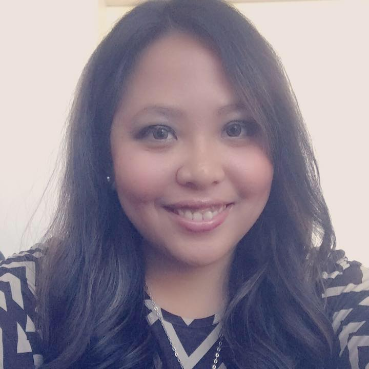

I was born in San Francisco, California on the 24th of July 1987 but I was raised in the Philippines. I am the eldest among twin daughters and the only children in the family. I finished Bachelor of Science in Computer Science in University of the Philippines - Los Baños. My hobbies include watching classic movies and TV series - mostly crime-solving genres, reading novels, listening to music and dreaming about the future.
I love to travel and enjoy the view of the scenery but I also prefer to be at home. If not listening to music, I just love to take a long good sleep. Speaking of travelling, my dream vacation would be in Paris, France - sipping coffee and eating bread with my loved one in front of the Eiffel Tower.
My love of programming started during my Sophomore year in college when my professor asked me to create a website. Ever since, not only do I love web designing but I also love critical thinking. I love to solve problems and dream to create a technology that would be useful in the future. I'm planning to take my Masters in the future majoring in IT and minoring in Computer Forensics.